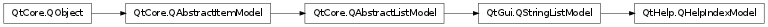

QHelpIndexModel ¶

Synopsis ¶
Functions ¶
- def createIndex (customFilterName)
- def filter (filter[, wildcard=”“])
- def isCreatingIndex ()
- def linksForKeyword (keyword)
Slots ¶
- def insertIndices ()
- def invalidateIndex ([onShutDown=false])
Signals ¶
- def indexCreated ()
- def indexCreationStarted ()
Detailed Description ¶
The PySide.QtHelp.QHelpIndexModel class provides a model that supplies index keywords to views.
- PySide.QtHelp.QHelpIndexModel. createIndex ( customFilterName ) ¶
-
Parameters: customFilterName – unicode Creates a new index by querying the help system for keywords for the specified customFilterName .
- PySide.QtHelp.QHelpIndexModel. filter ( filter [ , wildcard="" ] ) ¶
-
Parameters: - filter – unicode
- wildcard – unicode
Return type: Filters the indices and returns the model index of the best matching keyword. In a first step, only the keywords containing filter are kept in the model’s index list. Analogously, if wildcard is not empty, only the keywords matched are left in the index list. In a second step, the best match is determined and its index model returned. When specifying a wildcard expression, the filter string is used to search for the best match.
- PySide.QtHelp.QHelpIndexModel. indexCreated ( ) ¶
- PySide.QtHelp.QHelpIndexModel. indexCreationStarted ( ) ¶
- PySide.QtHelp.QHelpIndexModel. insertIndices ( ) ¶
- PySide.QtHelp.QHelpIndexModel. invalidateIndex ( [ onShutDown=false ] ) ¶
-
Parameters: onShutDown – PySide.QtCore.bool
- PySide.QtHelp.QHelpIndexModel. isCreatingIndex ( ) ¶
-
Return type: PySide.QtCore.bool Returns true if the index is currently built up, otherwise false.
- PySide.QtHelp.QHelpIndexModel. linksForKeyword ( keyword ) ¶
-
Parameters: keyword – unicode Return type: Returns all hits found for the keyword . A hit consists of the URL and the document title.